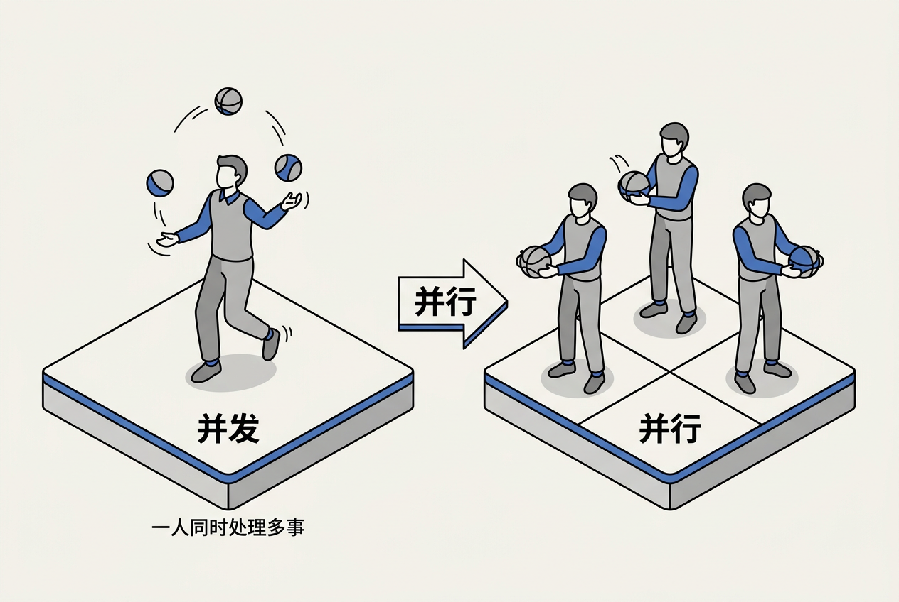
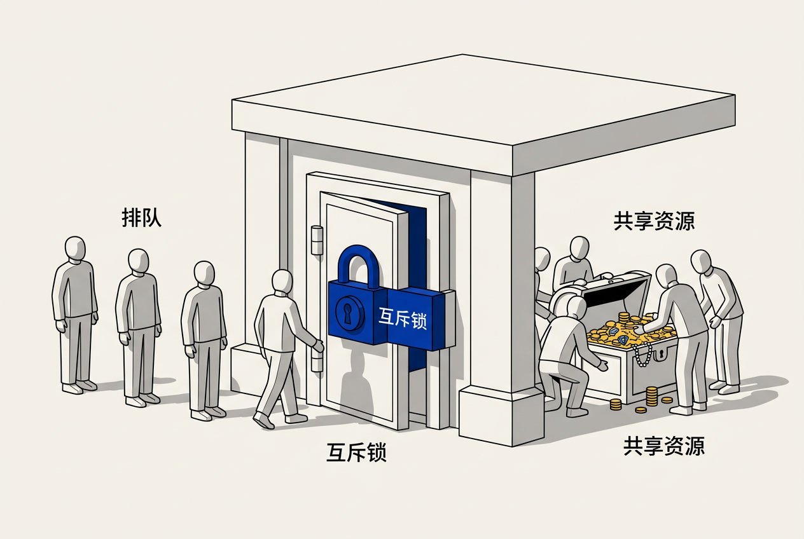

第4章：并行与并发 — 零基础讲义
讲义说明
本讲义基于 Jason Gregory 所著《Game Engine Architecture Volume I》第4版第4章（Parallelism and Concurrent Programming, p.187-332），逐节翻译推导。并行编程是游戏引擎中难度最高的章节之一。
本版插画由 ImageGen + Guizang 材质插画标准流程生成。
学习目标
- 区分"并发"和"并行"这两个常被混用的概念
- 理解进程、线程、协程的本质区别
- 掌握互斥锁、读写锁、条件变量、信号量的使用场景
- 理解死锁的四个必要条件及预防策略
- 了解无锁编程（CAS）和原子操作的基本原理
- 了解 SIMD 向量化指令如何加速游戏中的数学运算
- 掌握游戏引擎中典型的并行架构（Job System / Task Graph）
4.1 并发与并行的基础概念

4.1.1 并发（Concurrency）≠ 并行（Parallelism）
4.1.1.1 核心定义
| 并发（Concurrency） | 并行（Parallelism） | |
|---|---|---|
| 含义 | 多个任务交替执行 | 多个任务同时执行 |
| 前提 | 一个 CPU 核即可 | 需要多个 CPU 核 |
| 类比 | 一个人同时处理做饭和接电话（来回切换） | 两个人同时做饭和接电话（各司其职） |
| 实现方式 | 时间片轮转、协程 | 多线程、多进程 |
4.1.1.2 为什么游戏引擎需要并发？
即使只有单核 CPU，并发仍然有用。例如：加载资源时播放加载动画——加载（一个任务）和动画（另一个任务）交替执行，玩家看到的是"游戏在加载，但画面没卡死"。
4.1.2 时间片轮转
4.1.2.1 单核CPU如何"伪并行"
操作系统以极高的频率（通常 1ms~10ms 一次）在多个线程之间切换上下文（保存当前线程的寄存器→切换到下一个线程→恢复它的寄存器）。这个切换快到人类感知不到的程度，所以看起来像是"同时"在运行。
4.1.2.2 上下文切换的开销
每次切换需要保存/恢复所有 CPU 寄存器和刷新 TLB（Translation Lookaside Buffer——虚拟地址到物理地址的缓存），大约需要 1-10μs。如果切换太频繁（每秒上万次），开销占比可能达到 5-10%，反而降低性能。
4.1.3 Amdahl 定律
4.1.3.1 并行的上限
Amdahl 定律指出：并行加速比受限于程序中串行部分的比例。如果程序有 20% 的部分必须串行执行，即使用 100 个 CPU 核，最大加速比也只有 1/0.2 = 5 倍。
// Amdahl 定律公式
加速比 = 1 / (S + (1-S)/N)
S = 串行部分占比，N = CPU 核数
// 示例：S=0.2（20%串行），N=8核
加速比 = 1 / (0.2 + 0.8/8) = 1 / 0.3 ≈ 3.3x
// 即使有 8 个核，也只能快 3.3 倍可并行：多个 AI 各自独立更新、物理碰撞检测的 Broad Phase（空间哈希）、音频混合、动画更新。必须串行：输入采集（所有输入必须在一个时间点冻结）、渲染命令提交（GPU 命令队列是串行的）、物理 Solver（约束求解有严格的先后顺序）。
4.2 进程与线程
4.2.1 进程（Process）
4.2.1.1 进程的定义
进程是操作系统进行资源分配的基本单位。每个进程有自己独立的虚拟地址空间——A 进程不能直接读写 B 进程的内存（强制性隔离，安全机制）。游戏 .exe 启动后就是一个进程。
4.2.1.2 进程间通信（IPC）
进程之间的通信很麻烦并且开销大：管道（Pipe）、共享内存（需额外同步）、Socket。游戏引擎通常避免多进程架构——一个进程足矣。
4.2.2 线程（Thread）
4.2.2.1 线程的定义
线程是 CPU 调度执行的基本单位。一个进程内可以有多个线程，共享同一虚拟地址空间（所以线程A能看到线程B的变量——既有便利也有危险）。
4.2.2.2 进程 vs 线程 对比
| 进程 | 线程 | |
|---|---|---|
| 资源 | 独立虚拟地址空间 | 共享进程地址空间 |
| 通信 | IPC（管道/共享内存/Socket） | 直接读写共享变量 |
| 创建开销 | 大（克隆整个地址空间） | 小（只需分配栈） |
| 隔离性 | 强（一个崩溃不影响其他） | 弱（一个崩溃全进程死） |
| 游戏引擎中的使用 | 极少 | 主角（主线程+工作线程） |
4.2.3 C++11 线程的基本操作
4.2.3.1 创建与等待
#include <thread>
#include <iostream>
void WorkerFunc(int id) {
std::cout << "Worker " << id << " started\\n";
// 做真正的计算工作
std::cout << "Worker " << id << " finished\\n";
}
int main() {
std::thread t1(WorkerFunc, 1);
std::thread t2(WorkerFunc, 2);
t1.join(); // 等待 t1 完成（join = "加入=等待结束"）
t2.join(); // 等待 t2 完成
return 0;
}
// 输出（顺序不确定，取决于调度器）：
// Worker 1 started
// Worker 2 started
// Worker 1 finished
// Worker 2 finished4.2.3.2 join 与 detach 的区别
join： "我等你做完我再继续"——主线程阻塞直到子线程结束。detach： "你自由了，自己做自己的"——子线程后台运行，主线程不等它。detach 后不能再 join。detach 危险：如果主线程先退出，detach 的子线程被强制杀死。
4.3 线程同步

4.3.1 互斥锁（Mutex）
4.3.1.1 临界区问题
"两个线程同时修改一个变量"是最经典的并发 bug——Race Condition（竞态条件）。
// 没有锁的竞态条件
int sharedCounter = 0;
void ThreadA() { for(int i=0; i<1000000; i++) sharedCounter++; }
void ThreadB() { for(int i=0; i<1000000; i++) sharedCounter++; }
// 期望结果：2000000
// 实际结果：可能 1000234（部分自增丢失！）
// 原因：sharedCounter++ 不是原子操作，它分三步：
// ① 从内存读到寄存器 ② 寄存器+1 ③ 写回内存
// 两个线程可能在 ① 和 ③ 之间穿插，导致覆盖4.3.1.2 用 Mutex 解决竞态条件
#include <mutex>
std::mutex mtx;
int sharedCounter = 0;
void ThreadFunc() {
for (int i = 0; i < 1000000; i++) {
mtx.lock(); // 获取锁：其他线程在此处等待
sharedCounter++; // 临界区：每次只有一个线程执行
mtx.unlock(); // 释放锁：下一个等待线程获取
}
}
// 现在结果永远准确：2000000
// 更好的写法：RAII 锁守卫（自动解锁）
void ThreadFuncBetter() {
for (int i = 0; i < 1000000; i++) {
std::lock_guard<std::mutex> guard(mtx);
sharedCounter++;
} // guard 析构时自动 unlock，即使抛出异常也能安全解锁
}4.3.2 读写锁（Read-Write Lock）
4.3.2.1 读多写少的优化
生活类比：图书馆——多人可以同时阅览同一本书（读），但只有一个人能在书上做笔记（写），且做笔记时其他人不能看。
#include <shared_mutex>
std::shared_mutex rwMutex;
GameData sharedData;
// 多个读者同时读（共享锁）
void ReadData() {
std::shared_lock lock(rwMutex); // 共享锁：允许多个线程同时持有
float hp = sharedData.playerHP; // 安全读取
}
// 一个写者独占写（排他锁）
void WriteData() {
std::unique_lock lock(rwMutex); // 排他锁：阻塞所有读锁和其他写锁
sharedData.playerHP -= 10; // 安全写入
}4.3.3 条件变量（Condition Variable）
4.3.3.1 "等待某事发生"的模式
生活类比：外卖小哥——取货窗口空了就先停下（wait），厨师做好菜吆喝一声"好了！"（notify），外卖小哥继续取餐。
// 生产者-消费者模式
std::mutex mtx;
std::condition_variable cv;
std::queue<Task> taskQueue;
bool done = false;
void Producer() {
for (int i = 0; i < 100; i++) {
std::lock_guard lock(mtx);
taskQueue.push(Task(i));
cv.notify_one(); // 通知一个等待的消费者
}
done = true;
cv.notify_all(); // 通知所有消费者"结束了"
}
void Consumer() {
while (true) {
std::unique_lock lock(mtx);
cv.wait(lock, []{ return !taskQueue.empty() || done; });
// wait 自动释放锁并休眠，被 notify 后自动重新获取锁
if (!taskQueue.empty()) {
Task t = taskQueue.front();
taskQueue.pop();
lock.unlock();
t.Execute();
} else if (done) break;
}
}4.3.4 信号量（Semaphore）
4.3.4.1 "有限资源"的并发控制
生活类比：停车场——只有 10 个车位。第 11 辆车必须在门口等，直到有车离开。信号量就是那个"剩余车位数"的计数器。
#include <semaphore> // C++20
std::counting_semaphore<3> sem(3); // 最多3个线程同时访问
void Worker() {
sem.acquire(); // 获取一个"车位"
UseLimitedResource(); // 最多3个线程进入这里
sem.release(); // 释放"车位"
}4.4 死锁
4.4.1 死锁的四个必要条件（全部满足才死锁）
4.4.1.1 科菲曼条件
- 互斥： 资源一次只能被一个线程持有
- 持有并等待： 线程持有一个锁时等待另一个锁
- 不可抢占： 锁不能被外部强制释放
- 循环等待： 线程A等B持有的锁，B等A持有的锁
4.4.1.2 死锁的经典场景
std::mutex mtxA, mtxB;
void Thread1() {
mtxA.lock(); // 获取 A
mtxB.lock(); // 等待 B...（被 Thread2 持有）
// ... 使用 A 和 B ...
mtxB.unlock();
mtxA.unlock();
}
void Thread2() {
mtxB.lock(); // 获取 B
mtxA.lock(); // 等待 A...（被 Thread1 持有）
// ← 死锁！两个线程互相等对方释放
}4.4.2 死锁的预防
4.4.2.1 固定锁顺序
最简单的预防策略：所有线程以相同的顺序获取多个锁。如果大家都先拿A再拿B，就不会出现"我有A等B，你有B等A"的局面。也可以用 std::lock(mtxA, mtxB) 一次性获取多个锁。
4.4.2.2 尝试锁（Try-Lock）
while (true) {
mtxA.lock();
if (mtxB.try_lock()) { // try_lock：尝试获取，失败立即返回不等待
break; // 拿到了两个锁
}
mtxA.unlock(); // 没拿到 B，释放 A
std::this_thread::sleep_for(1ms); // 退避一下再试
}Job System 让死锁几乎不可能——因为作业（Job）是无状态的纯函数。"这个作业做完产生的结果"通过依赖图（Task Graph）传给下一个作业，不需要锁。各个作业拿自己的输入、写自己的输出，没有共享可变状态 = 没有需要锁的临界区 = 没有死锁。这就是"无锁设计"的思想基础。
4.5 无锁编程
4.5.1 原子操作
4.5.1.1 std::atomic 的基本用法
原子操作是不可分割的——要么完整执行，要么没有执行，不会被其他线程在中间打断。
#include <atomic>
std::atomic<int> counter(0);
void Increment() {
counter.fetch_add(1, std::memory_order_relaxed);
// 不需要锁！fetch_add 是原子的
}
// 但注意：原子操作不能替代复杂的临界区
// ❌ 错误：两个原子操作之间可以被其他线程插入
int old = counter.load();
counter.store(old + 1); // ← 另一个线程可能在这之间修改了 counter4.5.2 Compare-And-Swap（CAS）
4.5.2.1 无锁数据结构的基石
CAS 是硬件级别的原子指令：比较一个内存位置的值，如果等于预期值就替换为新值。
// CAS 伪代码
bool CAS(int* ptr, int expected, int desired) {
if (*ptr == expected) {
*ptr = desired;
return true; // 成功
}
return false; // 失败：值已经被改了，稍后再试
}
// 无锁栈的 push 操作（基于 CAS）
void Push(Node* node) {
do {
node->next = head.load(); // 读取当前栈顶
} while (!head.compare_exchange_weak(node->next, node));
// 尝试把 head 从 node->next 换成 node
// 如果失败（head 被其他线程改了），重新读取重试
}4.5.3 ABA 问题
4.5.3.1 CAS 的经典陷阱
线程1 读 head = A → 被换出。线程2 把 A 出栈，然后又把 A 入了栈（但 A 的内容可能变了）。线程1 回来发现 head 还是 A，CAS 成功——但 A 的 next 指针可能已经被改过，导致链表断裂。解决方案：给指针附加一个版本号（指针+计数器），即使地址相同，版本号不同 CAS 也会失败。
4.6 SIMD 向量化
4.6.1 什么是 SIMD
4.6.1.1 单指令多数据
SIMD（Single Instruction, Multiple Data）= 一条指令同时操作多个数据。就像给一个班的学生发同样的卷子——一个动作（发卷）同时给 40 个人。
// 普通加法：4 次操作
float a[4] = {1,2,3,4};
float b[4] = {5,6,7,8};
float c[4];
c[0] = a[0]+b[0]; // 操作1
c[1] = a[1]+b[1]; // 操作2
c[2] = a[2]+b[2]; // 操作3
c[3] = a[3]+b[3]; // 操作4
// SIMD 加法：1 次操作，4 个结果
__m128 va = _mm_load_ps(a);
__m128 vb = _mm_load_ps(b);
__m128 vc = _mm_add_ps(va, vb); // 一条指令完成4次加法
// 在 3D 数学中（向量/矩阵运算），加速可达 3-4 倍4.6.2 游戏中的 SIMD 应用
4.6.2.1 典型加速场景
- 矩阵乘法： 顶点变换中最频繁的操作，4x4 矩阵天然适合 SSE（128位 = 4个float）
- 蒙皮（Skinning）： 一个顶点被 4 根骨骼影响 → 4 组矩阵乘法和加权混合 → SSE 一波带走
- 粒子系统： 一次更新 4 个粒子的位置
- 音频混合： 4 路音轨同时混合
4.7 游戏引擎中的并行架构
4.7.1 多线程在游戏中的应用
4.7.1.1 典型线程分工（8核CPU）
// 游戏引擎典型的线程布局
主线程（Main Thread）：
输入采集 → 游戏逻辑 → 动画更新 → 渲染命令提交
工作线程池（Worker Threads，6-7个）：
├── 物理 Worker：NarrowPhase 碰撞检测 + Solver 约束求解
├── AI Worker 1：寻路计算
├── AI Worker 2：行为树评估
├── 渲染 Worker 1：视锥剔除 + LOD 选择
├── 渲染 Worker 2：Draw Call 准备
├── 音频 Worker：3D 音频空间化 + 混合
└── 加载 Worker：异步 IO + 资源加载
渲染线程（Render Thread）：
GPU 命令缓冲提交（某些引擎将渲染线程与主线程分离）4.7.2 作业系统（Job System）
4.7.2.1 作业 = 最小并行单元
传统多线程让你管理线程。Job System 让你声明"这些事可以并行做"——系统自动分配线程执行。
// Job System 的声明式范式
Job* physicsJob = JobSystem::Create([](){
Physics::NarrowPhase(); // 这个可以并行
});
Job* aiJob = JobSystem::Create([](){
AI::Update(); // 这个也可以并行
});
// 声明依赖：aiJob 必须在 physicsJob 之后
aiJob->AddDependency(physicsJob);
JobSystem::Run(physicsJob);
JobSystem::Run(aiJob);
JobSystem::WaitForAll(); // 等所有作业完成4.7.3 数据一致性策略
4.7.3.1 双缓冲模式
游戏循环中一个经典问题：渲染线程读"角色位置"时，逻辑线程正在更新它。双缓冲解决：逻辑线程写 Buffer A，渲染线程读 Buffer B，帧末尾交换指针。
4.7.3.2 作业依赖模式
通过 Task Graph 声明"物理→AI→渲染"的先后顺序。有依赖的作业串行执行，无依赖的并行执行。这保证了数据一致性而不需要锁。
本章核心洞察
多线程编程的难度不是"学一个新 API"，而是思维方式的根本转变。单线程世界是线性的、可预测的——代码从上到下执行。多线程世界是非线性的、随机的——两个线程的执行顺序由 CPU 调度器（本质上是个随机过程）决定。理解并行，理解了"锁不是越多越好"、"无锁不一定比有锁快"、"Job System 是游戏行业的正确答案"，你才算真正入门了现代游戏引擎开发。
三条并行准则：
1. 能不共享就不共享： 每个线程独享自己的数据——这是最快的"锁"
2. 能不用锁就不用锁： Job System + Task Graph 的数据依赖消除了对锁的需求
3. 锁的粒度越细越好： 锁住一行代码比锁住一个函数好，锁住一个变量比锁住一个对象好
📝 课后练习题（含答案）
并发： 一个人同时做多项任务——边煮汤边切菜（在两者之间来回切换，每个时刻只做一件事）。并行： 两个人分别做两项任务——A煮汤、B切菜（真正的同时进行）。并发是"任务管理"，并行是"资源利用"。单核CPU可以并发但不能并行。
示例见 4.3.1.1 和 4.3.1.2 的 sharedCounter 代码。关键点：counter++ 不是原子的（读-改-写三步），两个线程可能读到相同的值导致一个自增丢失。用 std::lock_guard<std::mutex> 保护临界区。
①互斥 ②持有并等待 ③不可抢占 ④循环等待。最容易破坏 ④循环等待——固定所有线程的锁获取顺序（如"必须先拿A再拿B"），循环等待就不可能发生。也可以用 std::lock() 一次性获取所有锁。
lock_guard： 轻量 RAII 锁守卫，构造时 lock，析构时 unlock。不支持手动解锁/重新锁定。unique_lock： 更灵活——可以手动 unlock、延迟 lock、配合条件变量使用（condition_variable 的 wait 需要 unique_lock 因为它内部需要 unlock/re-lock）。lock_guard 够用就用它，效率最高。需要条件变量时用 unique_lock。
CAS： 原子地比较内存值是否等于期望值，等于则替换。是实现无锁数据结构的基础。
ABA 问题： 读到的值是A → 调度器切换到其他线程 → 其他线程把A改成B又改回A → 调度器切回来 → CAS 看到值还是A以为没变过，成功替换。但实际上 A 已经"去了一趟地狱又回来了"。解决方案：给指针附加版本号（指针+计数器统一 CAS）。
SIMD = Single Instruction Multiple Data。一条指令同时操作 4 个 float（SSE）或 8 个 float（AVX）。游戏引擎大量使用向量和矩阵运算（每个顶点变换 = 矩阵×向量 = 4 个点积），SIMD 可将这些运算速度提升 3-4 倍。编译器自动向量化（-O2 优化）能处理简单循环，但复杂的数学运算需要手动 SIMD intrinsics。
① 自动负载均衡： 不需要手动决定"这个线程处理哪些AI"，系统把作业分配给空闲线程。② 声明式依赖： 通过 Task Graph 声明"B 必须在 A 之后"——系统自动处理执行顺序。③ 消除锁： 作业是纯函数，不共享可变状态，从根本上消灭竞态条件和死锁。④ 可伸缩： 从 4 核到 16 核不需改游戏逻辑——Job System 自动利用所有核心。
因为程序中总有必须串行执行的部分（如输入采集、渲染命令提交、物理 Solver）。加速比上限 = 1/串行比例。如果 20% 串行，数学上的极限加速比是 5x，无论用多少核。对引擎设计的影响： 不能只关注"并行化这个系统"——同样重要的是减少串行部分的耗时。如果串行部分占 50%，把所有能并行的做到极致也只能快 2 倍。
🤖 qAagent 零基础问答区
不急。多线程是高级主题——先扎实掌握单线程 C++（类、指针、RAII、STL），再接触多线程。顺序建议：① 先理解进程和线程的概念差异 ② 然后写一个简单的 std::thread 程序 ③ 再学 mutex 和 lock_guard ④ 之后再了解死锁和原子操作。跳过"手写无锁数据结构"——那是专家级别的内容，先用现成的库。
主线程负责全局状态管理和渲染命令提交。这两个都具有天然的串行依赖——你不能在"不知道全局状态"的情况下更新任何子系统。而且 GPU 的命令队列是串行的——主线程是唯一能提交绘制命令的线程（这简化了驱动和引擎的交互）。主线程不负责"做所有事情"——它只是"协调"，然后把重活（物理/寻路/IO）分发到工作线程。
多线程 bug 的可怕之处：它们的出现依赖线程调度时机——调试器让程序变慢，可能掩盖问题（Heisenbug）。方法：① 用 Thread Sanitizer（TSan）检测数据竞争（开销约 5-10x）② 用 Relacy 等轻量级竞态检测器 ③ 大量插入日志（调试多线程 bug 的最有效工具仍然是 printf）④ 用静态分析工具（Clang 的 Thread Safety Analysis 可以标注"这个函数在持有 mtx 时才能调用"）⑤ 最小化共享状态——减少需要调试的范围。
绝对不能互相替代！这是 C++ 中最常见的误解。
volatile： 告诉编译器"不要优化掉对这个变量的读写"（每次从内存读，不要缓存到寄存器中）。用于内存映射 IO、信号处理器。不保证原子性！
atomic： 保证操作的原子性（不可分割）和内存序（其他线程何时能看到修改）。使用 CPU 级别的原子指令（如 LOCK CMPXCHG）。在游戏引擎中，volatile 几乎不使用，atomic 用于无锁数据结构。
无竞争时：std::mutex::lock() 约 25ns（纯用户态，futex 快速路径）。有竞争时：线程被 OS 挂起→上下文切换（~1-10μs），开销增加 40-400 倍。关键教训： 锁的开销不在"获取锁"，而在"等待锁"——当多个线程同时竞争同一把锁时，性能断崖式下跌。所以好的并行设计是减少共享，不是"把所有东西都加锁"。
简单决策树：
① 是否只操作单个整数/指针？→ atomic（最快，无锁）
② 是否"读多写少"？→ shared_mutex（多读者不互斥）
③ 是否有复杂操作需要保护？→ std::mutex + lock_guard
④ 是否需要等待条件？→ condition_variable + unique_lock
⑤ 是否"写完就不改了"？→ 什么都不需要（不可变数据天生线程安全）
传统方式： 你管理线程——手动创建、手动决定每个线程做什么、手动 join。Task Graph： 你声明任务和依赖——"A 做完才能做 B，C 和 D 可以并行"——系统负责分配线程、调度执行。Task Graph = 声明式的并行编程；传统线程 = 命令式的并行编程。类比：传统 = 手动挡（你要决定什么时候换挡），Task Graph = 自动挡（你说"我要去X"，车自己换挡）。
并行编程的三大黄金法则：
1. 不可变数据是免费的线程安全： 能做成 const 的做成 const
2. 锁的粒度 = 性能： 锁里面做的事越少越好
3. Job System > 手写多线程： 现代游戏引擎的并行通过 Job System 实现，这是行业最佳实践
记住这三条，比记住所有 API 细节更重要。
- 学习目标
- 学习目标
- 4.1 并发与并行的基础概念
- 4.1.1 并发（Concurrency）≠ 并行（Parallelism）
- 4.1.1.1 核心定义
- 4.1.1.2 为什么游戏引擎需要并发？
- 4.1.2 时间片轮转
- 4.1.2.1 单核CPU如何"伪并行"
- 4.1.2.2 上下文切换的开销
- 4.1.3 Amdahl 定律
- 4.1.3.1 并行的上限
- 4.2 进程与线程
- 4.2.1 进程（Process）
- 4.2.1.1 进程的定义
- 4.2.1.2 进程间通信（IPC）
- 4.2.2 线程（Thread）
- 4.2.2.1 线程的定义
- 4.2.2.2 进程 vs 线程 对比
- 4.2.3 C++11 线程的基本操作
- 4.2.3.1 创建与等待
- 4.2.3.2 join 与 detach 的区别
- 4.3 线程同步
- 4.3.1 互斥锁（Mutex）
- 4.3.1.1 临界区问题
- 4.3.1.2 用 Mutex 解决竞态条件
- 4.3.2 读写锁（Read-Write Lock）
- 4.3.2.1 读多写少的优化
- 4.3.3 条件变量（Condition Variable）
- 4.3.3.1 "等待某事发生"的模式
- 4.3.4 信号量（Semaphore）
- 4.3.4.1 "有限资源"的并发控制
- 4.4 死锁
- 4.4.1 死锁的四个必要条件（全部满足才死锁）
- 4.4.1.1 科菲曼条件
- 4.4.1.2 死锁的经典场景
- 4.4.2 死锁的预防
- 4.4.2.1 固定锁顺序
- 4.4.2.2 尝试锁（Try-Lock）
- 4.5 无锁编程
- 4.5.1 原子操作
- 4.5.1.1 std::atomic 的基本用法
- 4.5.2 Compare-And-Swap（CAS）
- 4.5.2.1 无锁数据结构的基石
- 4.5.3 ABA 问题
- 4.5.3.1 CAS 的经典陷阱
- 4.6 SIMD 向量化
- 4.6.1 什么是 SIMD
- 4.6.1.1 单指令多数据
- 4.6.2 游戏中的 SIMD 应用
- 4.6.2.1 典型加速场景
- 4.7 游戏引擎中的并行架构
- 4.7.1 多线程在游戏中的应用
- 4.7.1.1 典型线程分工（8核CPU）
- 4.7.2 作业系统（Job System）
- 4.7.2.1 作业 = 最小并行单元
- 4.7.3 数据一致性策略
- 4.7.3.1 双缓冲模式
- 4.7.3.2 作业依赖模式
- 本章核心洞察
- 📝 课后练习题（含答案）
- 🤖 qAagent 零基础问答区